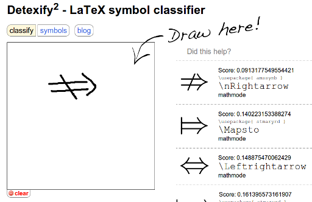

Contents
Detexify
The easiest way to search for a math symbol is Detexify. This webservices allows you to draw the symbol. It looks like this:

{kind=link}
Detexify - A webservice for finding LaTeX symbols.
Symbol tables
Arrows
| \(\rightarrow\) | \rightarrow | \(\leftarrow\) | \leftarrow | \(\Rightarrow\) | \Rightarrow | \(\Leftarrow\) | \Leftarrow |
| \(\leftrightarrow\) | \leftrightarrow | \(\Leftrightarrow\) | \Leftrightarrow | \(\nRightarrow\) | \nRightarrow | \(\nrightarrow\) | \nrightarrow |
| \(\leadsto\) | \leadsto | \(\mapsto\) | \mapsto | . | . | . | . |
Greek
| \(\alpha\) | \alpha | \(\beta\) | \beta | \(\gamma\) | \gamma | \(\delta\) | \delta |
| \(\zeta\) | \zeta | \(\eta\) | \eta | \(\theta\) | \theta | \(\epsilon, \varepsilon\) | \epsilon, \varepsilon |
| \(\iota\) | \iota | \(\kappa\) | \kappa | \(\lambda\) | \lambda | \(\mu\) | \mu |
| \(\nu\) | \nu | \(\xi\) | \xi | o | o | \(\pi\) | \pi |
| \(\rho\) | \rho | \(\sigma\) | \sigma | \(\tau\) | \tau | \(\upsilon\) | \upsilon |
| \(\phi\) | \phi | \(\chi\) | \chi | \(\psi\) | \psi | \(\omega, \Omega\) | \omega, \Omega |
| \(\Phi\) | \Phi | \(\varphi\) | \varphi | . | . | . | . |
| \(\Lambda\) | \Lambda | \(\Delta\) | \Delta | . | . | . | . |
Operations
| \(\cdot\) | \cdot | \(\oplus\) | \oplus | \(\times\) | \times | \(\nabla\) | \nabla |
| \(\pm\) | \pm | \(\mp\) | \mp | \(\cup\) | \cup | \(\cap\) | \cap |
Relations
| \(\approx\) | \approx | \(\sim\) | \sim | \(\cong\) | \cong | \(\neq\) | \neq |
Calligraphic Letters
| \(\cal{O}\) | \cal{O} | \(\mathfrak{M}\) | \mathfrak{O} | \(\mathfrak{R}\) | \mathfrak{R} |
Sets
| \(\mathbb{N}\) | \mathbb{N} | \(\mathbb{Z}\) | \mathbb{Z} | \(\mathbb{R}\) | \mathbb{R} | \(\mathbb{C}\) | \mathbb{C} |
| \(\mathbb{A}\) | \mathbb{A} | \(\cap\) | \cap | \(\cup\) | \cup | \(\in\) | \in |
| \(\subseteq\) | \subseteq | \(\subsetneq\) | \subsetneq | \(\notin\) | \notin | \(\bigcup\) | \bigcup |
Other
You might need \qed, \qedsymbol, \blacksquare for proofs. It is the Tombstone \(\blacksquare\)
I’ve recently needed \(\dots, \ddots, \vdots\) (\dots, \ddots, \vdots) for a visualization in a matrix. Note that you can write … instead of \dots, but you’ll lose the semantics.
See also
- List of symbols - 164 pages of symbols
- Displaying a formula